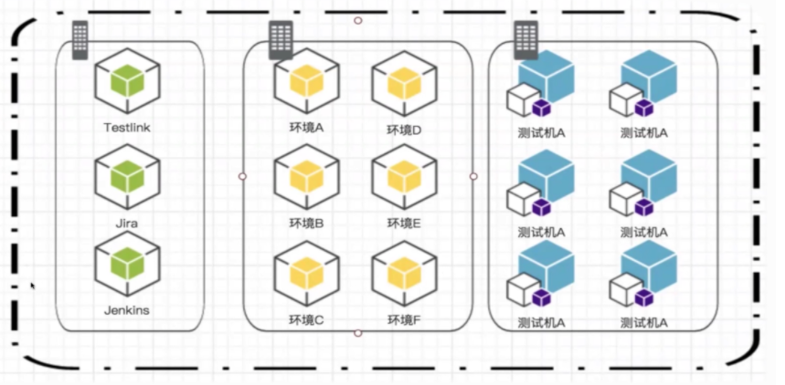
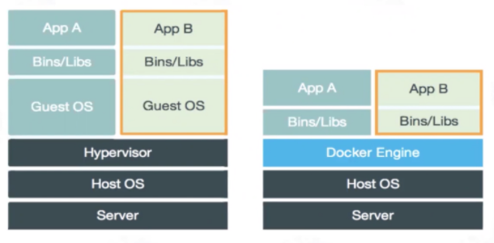
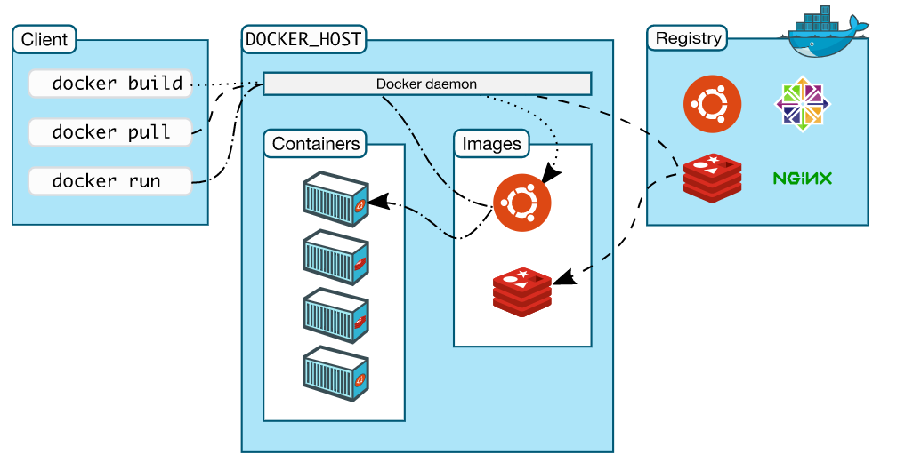
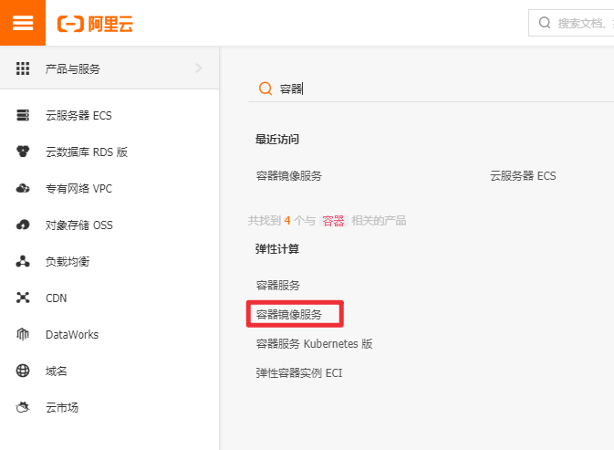
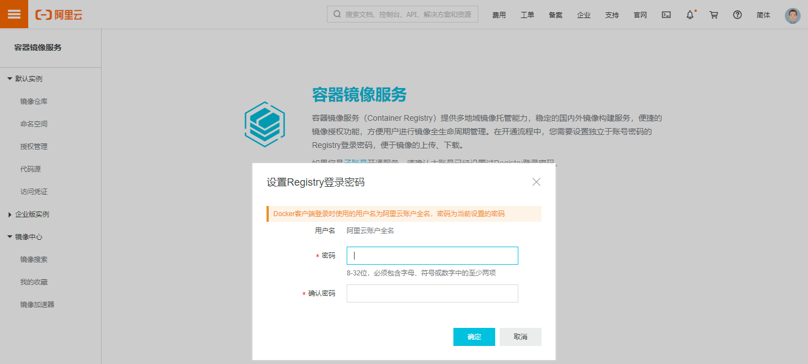
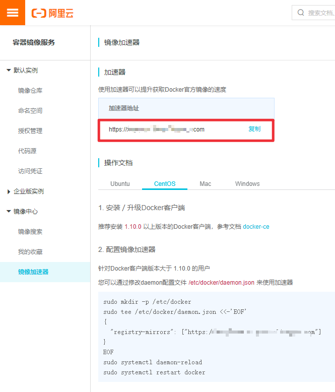

容器技术（Linux Container，LXC）是一种轻量级的虚拟化技术，容器镜像运行在一个隔离环境中，像集装箱一样，把应用封装起来，应用之间互不干扰，实现进程的隔离。Docker 是常用的一种容器技术，本文将简要介绍Docker及Docker安装方法。
Docker简介
Docker是什么
Docker基于Go语言开发，在2013年正式发布，是一个是用于构建、部署和管理容器化应用程序的开源平台，Docker 允许开发人员将应用程序打包到容器中，容器将应用程序源代码、操作系统库以及所需的依赖结合在一起，可以发布到任何流行的系统中。Docker具有以下优点：
- 使开发人员能够使用简单命令自动化构建、部署、运行、更新容器，缩短开发及运行代码之间的周期，快速交付应用。
- 应用隔离：不同软件运行环境兼容依赖问题，每个容器都可以看作是一个不同的微服务，容器之间互不影响。
- 轻量级，比创建虚拟机快得多
- 运行环境可移植，容器镜像将应用运行环境，包括代码、依赖、资源文件等打包。

Docker与虚拟机的区别
虚拟机（Virtual machine, VM)是对计算机系统的仿真，操作系统(OS)及其应用程序共享单个主机服务器的硬件资源，硬件是虚拟化的，每个虚拟机都有自己的底层操作系统。管理程序(hypervisor)位于硬件和虚拟机之间，负责创建和运行 VM 的软件、固件或硬件。
前面讲过，Docker也是一种虚拟化技术，它只虚拟化操作系统，而不像虚拟机那样虚拟化操作系统和硬件资源。主要区别如下：
- 容器与容器之间只是进程的隔离，通过名称空间隔离，而虚拟机是完全的资源隔离，可能更安全。
- 虚拟机的启动可能需要几分钟，Docker启动只需几秒钟甚至更短。
- 容器共享宿主操作系统的内核，而虚拟机使用完全独立的内核，需虚拟化内核。
- 虚拟机是操作系统和硬件的虚拟化，Docker是操作系统的虚拟化

Docker Engine
Docker Engine 是一个客户机/服务器 (C/S架构) 应用，主要包括三个部分：
- server：守护进程(dockerd 命令)，Docker Daemon
- REST API：客户端与守护进程间的通信接口
- CLI：command line interface (CLI) ，命令行接口客户端（docker 命令）

CLI 使用 REST API 与 Docker Daemon 进行通信，实现对Docker Daemon的控制和交互。也可以使用 UNIX 套接字、网络接口进行通信。守护进程构建、运行和管理 Docker 对象（镜像、容器、网络和volumes）。Docker 客户机和守护进程可以在同一个系统上运行，也可以将 Docker 客户机连接到远程 Docker 守护进程。

Docker daemon
Docker 守护进程(dockerd)是后台服务进程，是生存期较长的进程，负责监听 Docker API 请求，管理 Docker 对象。守护进程还可以与其他守护进程通信来管理 Docker 服务。
Docker client
Docker 客户端(docker)是 Docker 用户与 Docker 交互的主要方式，客户端将命令发送给守护进程，然后守护进程执行这些命令，Docker 客户端可以与多个守护进程进行通信。
Docker Images
Docker镜像是一个只读模板，其中包含创建 Docker 容器的说明。通常，一个镜像都可能依赖一个或多个下层的镜像组成的另一个镜像。Docker镜像可以从Docker仓库中下载，也可以自己创建（Dockerfile）。
Docker Registry
Docker仓库是集中存放Docker镜像的地方，默认公共仓库为 Docker Hub，也可以自己配置私人仓库。当使用 docker pull 或 docker run 命令时，将从配置的仓库中提取所需的镜像。使用 docker push 命令时，镜像将被推送到配置的仓库中。
Docker Containers
Docker容器是镜像运行后的进程，是镜像的可运行实例，默认情况下，容器之间是隔离的。
Docker安装
Docker安装可参考官方文档：https://docs.docker.com/engine/install/
Windows 10
下载地址 : https://hub.docker.com/editions/community/docker-ce-desktop-windows
Linux
安装方法有两种，一种是设置docker源进行安装（推荐方法），另一种是是下载安装包（CentOS和Ubuntu对应RPM、DEB包）进行手动安装，一般在安装主机没有网络的情况下使用这种方法。（RPM、DEB包介绍及安装方法可参考Linux系统介绍）
下面介绍一下CentOS下的docker安装方法（也可参考官方文档：https://docs.docker.com/engine/install/centos/），Ubuntu系统下docker的安装参考官方文档：https://docs.docker.com/engine/install/ubuntu/
要求CentOS 7 或者 CentOS 8
1. 卸载旧版本
1 | $ sudo yum remove docker \ |
2. 安装依赖、添加源
1 | # 安装yum-utils包 |
3. 安装Docker Engine
安装最新版本的Docker Engine 和 containerd1
$ sudo yum install docker-ce docker-ce-cli containerd.io docker-buildx-plugin docker-compose-plugin
或者安装指定版本：1
2
3
4
5
6
7
8# 列出可用版本
$ yum list docker-ce --showduplicates | sort -r
docker-ce.x86_64 3:20.10.2-3.el7 docker-ce-stable
docker-ce.x86_64 3:20.10.2-3.el7 @docker-ce-stable
docker-ce.x86_64 3:20.10.1-3.el7 docker-ce-stable
docker-ce.x86_64 3:20.10.0-3.el7 docker-ce-stable
# 安装指定版本
$ sudo yum install docker-ce-20.10.2 docker-ce-cli-20.10.2 containerd.io
4. 启动Docker
1 | # 启动 |
5. 检验Docker Engine是否安装成功
1 | # 运行hello-world镜像 |
配置阿里云镜像加速器
默认是从Docker Hub下载镜像，为了更快的下载docker镜像，可以配置国内的镜像服务器，下面介绍阿里云镜像配置方法。
阿里云控制台地址：https://homenew.console.aliyun.com/
进入容器镜像服务
设置登陆密码
首次使用需要设置密码：
设置镜像加速
点击进入镜像加速器：https://cr.console.aliyun.com/cn-hangzhou/instances/mirrors

选择对应的操作系统，按照操作步骤进行操作。
常见问题
报错信息：1
Failed to Setup IP tables: Unable to enable SKIP DNAT rule: (iptables failed: iptables --wait -t nat -I DOCKER -i br-48bc3090b33e -j RETURN: iptables: No chain/target/match by that name.
原因是关闭防火墙之后docker需要重启：1
service docker restart
参考：
本文标题:容器技术介绍：Docker简介及安装
文章作者:hiyo
文章链接:https://hiyongz.github.io/posts/container-docker-guide/
许可协议:本博客文章除特别声明外，均采用CC BY-NC-ND 4.0 许可协议。转载请保留原文链接及作者。